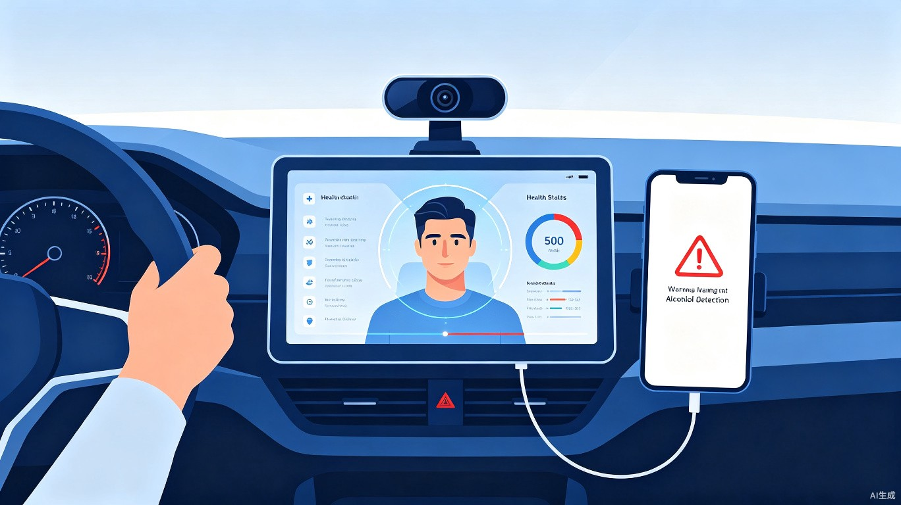
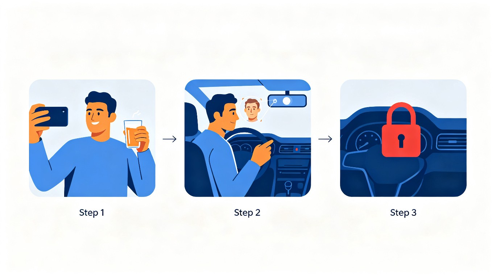
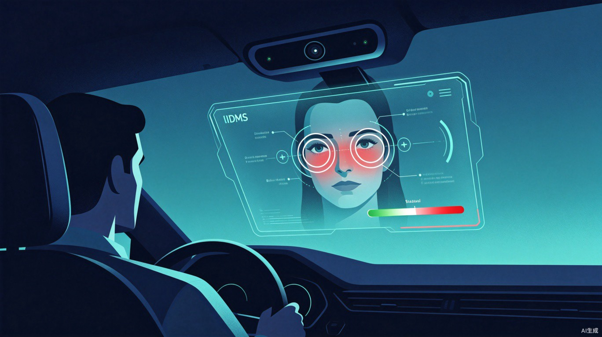
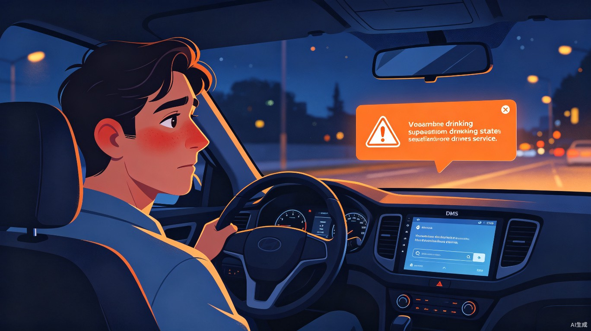
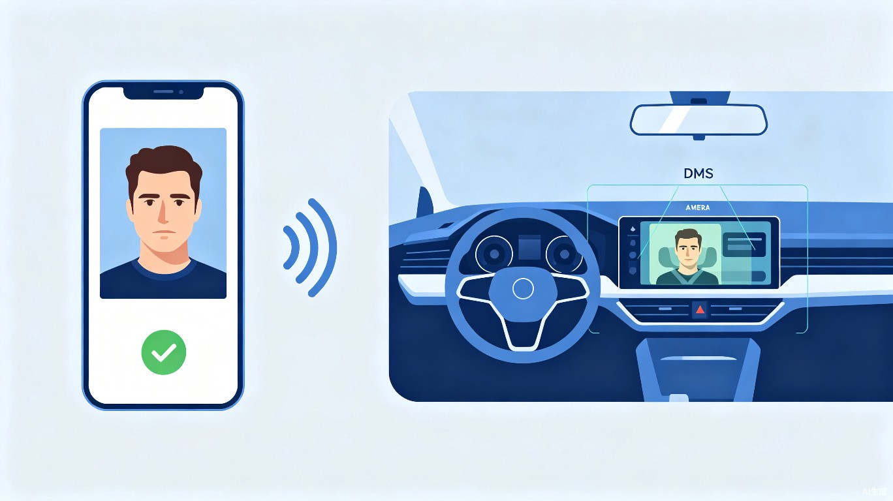

创意介绍
想解决什么问题
绝大多数酒驾不是因为"不知道酒驾危险"，而是因为喝酒后心存侥幸，觉得自己没事。人在清醒时都知道不该酒驾，但几杯酒下肚后，理性判断力下降，"应该没问题"的念头就冒出来了。现有的吹气式酒精检测仪需要主动配合，容易被规避；交警设卡属于事后拦截，无法在上车的那一刻拦住侥幸心理。
为什么会想到做这个
灵感来自一个简单的行为——喝酒前主动把车钥匙交给朋友。清醒时的你做出的决定，往往是最安全的决定。我把这个行为数字化：在还没喝、脑子还清醒的时候，用手机拍一张自己的面部照片上传到汽车，相当于给车设了一把"安全锁"。等到喝完之后，即使心存侥幸坐上驾驶座，DMS也会发现你的面部状态跟清醒时不一样，用客观的AI判断替你守住底线。这就是：用理性时的自己，保护不清醒时的自己。
大概是什么产品
一套汽车DMS软件系统 + 手机端辅助App。核心机制是"清醒时的自我安全锁"：驾驶者在饮酒前主动用绑定手机拍摄面部基准照上传至车辆，宣告"我今晚要喝酒，等下别让我开车"。之后上车时，DMS摄像头自动扫描面部特征与基准照AI比对，检测到饮酒迹象时给出安全提示（不直接禁止驾驶），同时联动手机端通知紧急联系人或代驾服务。就像喝酒前把钥匙交给了一个永远不会被说服的"朋友"。
目标用户及痛点
有社交饮酒习惯的私家车主、网约车/出租车司机、企业车队管理者。年龄主要集中在25-55岁，经常在应酬、聚会后需要驾车的群体。
聚餐/应酬结束后准备驾车回家、KTV/酒吧消费后上车、长途驾驶中途饮酒休息后重新出发、车队出车前的安全检查。
当前痛点
- 侥幸心理 — 酒后理性下降，"我觉得没事"的念头会压过清醒时的判断，缺乏一个客观的、不会被说服的"拦阻者"
- 现有方案被动 — 交警设卡抽查属于事后拦截，吹气式酒精检测仪需要主动配合且容易被规避
- 遗忘风险 — 喝多了确实可能忘记自己喝过酒，尤其是长时间应酬后
- 成本与普及 — 车载酒精锁价格高、安装复杂，普通消费者难以承担
核心方案：清醒设锁，酒后守线

第一步：清醒时"设锁"（手机端）
在你还没喝、脑子还清醒的时候，打开手机App拍一张自己的面部照片上传到汽车。这个动作的本质是：你在清醒时做了一个决定——"我今晚要喝酒，等下别让我开车"。就像喝酒前主动把车钥匙交给朋友一样，只不过这次"朋友"是DMS系统。照片只能通过与车辆绑定的唯一手机上传，防止喝醉后找别人代拍解锁。基准照采用加密存储在车载安全区域内。
第二步：酒后上车，DMS替你守线
喝完之后，你可能心存侥幸坐上驾驶座——但DMS摄像头已经在等你了。系统自动扫描你当前的面部特征，跟清醒时拍的照片进行AI比对。即使你的理性已经被酒精削弱，DMS的判断不会。系统综合分析以下维度：
面部直观特征
- 面色异常（泛红/苍白/发青）
- 眼白充血，布满红血丝
- 眼神飘忽，目光失焦
- 眨眼频率紊乱，眼皮沉重
- 嘴唇干燥泛红
- 面部肌肉僵硬，表情不自然
神情与行为特征
- 情绪异常波动（亢奋或萎靡）
- 语言含糊、语速紊乱
- 头部轻微摇晃或转动迟缓
- 坐姿不稳，难以保持端正
- 对DMS提示反应迟缓

分级响应：提示优先，不直接禁止
本系统采用提示但不禁止驾驶的策略。原因有二：一是避免紧急情况下（如需要送人去医院）阻断驾驶造成更大的危险；二是这份安全锁本质上是"清醒的你"给"酒后的你"的善意提醒，而非强制约束。系统扮演的是一个永远不会被酒精说服的"朋友"角色，用客观数据替你喊停。
面部特征与基准照一致，未检测到异常。系统静默运行，不干扰正常驾驶。
检测到部分饮酒特征（如轻微面色泛红、眨眼略慢）。系统弹出语音+屏幕双重提醒："检测到您可能存在饮酒迹象，建议不要驾驶"，同时向手机端发送通知，可一键呼叫代驾。
多项饮酒特征同时触发（面色红+眼白充血+眼神失焦+头部摇晃）。系统持续高等级语音警告，联动手机通知所有紧急联系人，推送最近代驾服务，并记录检测日志。
就算你忘了在喝酒前拍照，DMS也不会"罢工"。系统内置通用饮酒面部识别模型，即使没有基准照也能独立检测当前面部是否存在典型饮酒特征，并发出相应等级的提示。但有基准照时，比对准确度会更高。

手机与汽车：一把"清醒钥匙"

绑定配对
首次使用，手机App通过蓝牙/NFC与车辆一对一绑定，这把"清醒钥匙"只属于你
清醒时设锁
喝酒前用手机拍一张面部照，加密传到车上的安全存储区——"朋友，今晚帮我看着点"
酒后守线
你上车后DMS自动比对，发现不对劲就提醒你、通知你的紧急联系人——你清醒时的决定，它替你执行
- 唯一绑定机制 — 只有绑定的手机才能上传基准照，防止喝醉后找别人代拍"解锁"作弊
- 紧急联系人通知 — 检测到红色等级时，自动向预设的紧急联系人发送位置和状态信息
- 一键代驾呼叫 — 手机端集成主流代驾平台，检测到异常可直接呼叫代驾
- 检测日志 — 所有检测记录加密存储，支持个人查阅和授权第三方（如保险公司）核验
价值与意义
技术可行性
目前主流新能源车型（如比亚迪、蔚来、小鹏等）已标配DMS摄像头，具备红外补光功能，可在夜间和暗光环境下正常工作，无需额外硬件投入。
基于深度学习的面部特征识别（如面部分析、眼动追踪、表情识别）已在学术和工业界成熟应用，准确率可达95%以上，且可通过OTA持续优化模型。
所有面部数据均在车载端本地处理和存储，不上传云端；基准照采用AES-256加密；手机与车辆的通信使用TLS 1.3协议，符合《个人信息保护法》要求。
系统为纯软件方案，可通过OTA升级部署到已搭载DMS摄像头的车辆；手机端App支持iOS和Android双平台，用户下载即可使用。